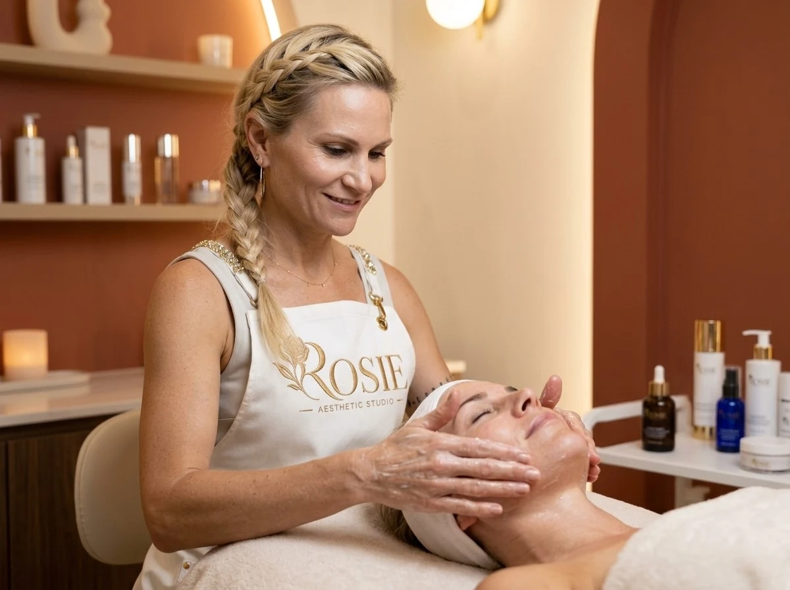
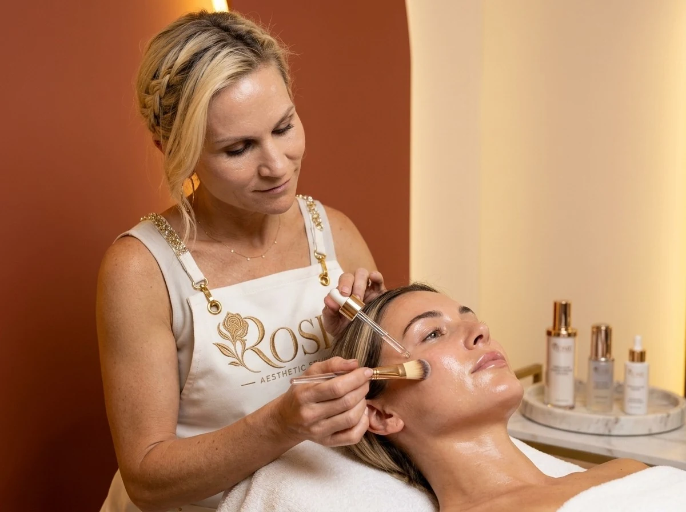
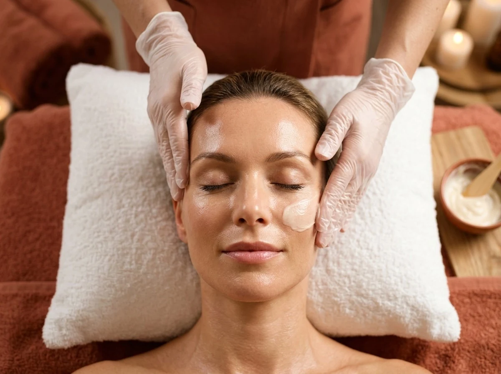
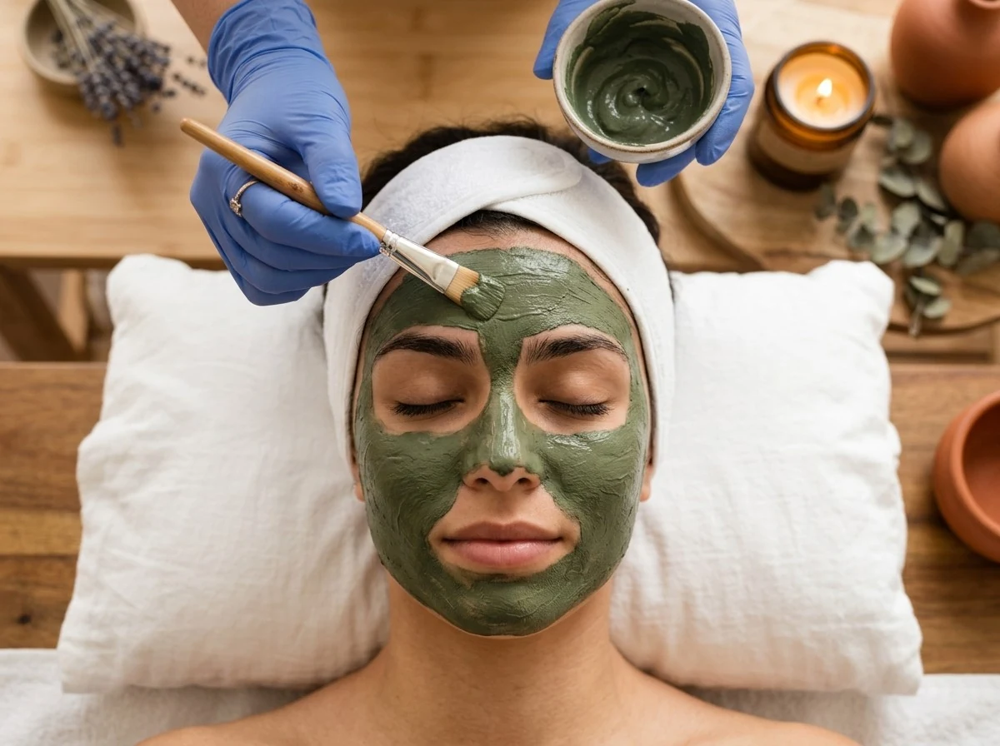

Személyre szabott arckezelések a bőröd valódi igényeire.
Hiszek abban, hogy nincs két egyforma bőr, ezért nálam minden kezelés a bőröd aktuális állapotához és egyéni igényeihez igazodik.
A bőröd igényeihez igazítva. Célzott rituálék a tiszta, hidratált és élettel teli bőrért.

Top VálasztásAlapos, mégis kíméletes pórustisztítás a mitesszeres, tisztátalan bőrkép megújítására.

Hidratálás & GlowTöbbszintű hialuronsavas feltöltés a száraz, feszülő vagy fakó bőr természetes ragyogásáért.

Anti-Aging & LiftingBiomimetikus peptidekkel és lifting masszázzsal a tónusosabb, feszesebb arcképért.

KiegyensúlyozásGyulladáscsökkentő, faggyúszabályozó ápolás mitesszeres, aknéra hajlamos bőrre.
Az első találkozáskor felmérem a bőröd aktuális állapotát, és ennek alapján javaslom a számodra megfelelő kezelést és otthoni rutint.
Minden bőr más. Minden eredmény egy személyre szabott folyamat része.
A szalonkezelés önmagában nem minden.
Segítek kialakítani egy olyan otthoni rutint, amely valóban illeszkedik a bőrödhöz, az életviteledhez és a
lehetőségeidhez.
Professzionális, személyre szabott kezeléseink és szolgáltatásaink átlátható díjai.
Ha még nem tudod, mire van szüksége a bőrödnek, ezzel érdemes indulnod. Alaposan átvizsgáljuk a bőrödet, megbeszéljük a céljaidat, és a helyszínen állítjuk össze az ideális kezelést és otthoni ápolási tervet.
Minden fontos információ a stúdiólátogatásról és az időpontfoglalásról.
A legegyszerűbb az oldalon található „Időpontot foglalok” gombra kattintva kitölteni a rövid űrlapot. Emellett telefonon a +36 30 198 4220 számon is örömmel egyeztetek veled!
A kezelések során professzionális, magas hatóanyag-tartalmú kozmetikumokkal dolgozom, a bőr aktuális állapotához és egyéni igényeihez igazítva.
Kiemelt márkám a Vagheggi, amelynek professzionális kezelési protokolljait és otthoni bőrápolási termékeit is alkalmazom.
A kezelések során többek között olyan értékes hatóanyagokkal dolgozom, mint:
Bizonyos célzott kezelésekhez a Clinicare professzionális hatóanyagait és kezelési protokolljait is alkalmazom.
A megfelelő hatóanyagokat minden esetben a bőr állapotának, érzékenységének és a kitűzött célnak megfelelően választom ki.
Különösebb előkészület nem szükséges. Nyugodtan érkezhetsz sminkben is, a stúdióban kíméletesen megtisztítom az arcodat. Érdemes átgondolnod, milyen termékeket használsz most otthon, hogy azokat is át tudjuk beszélni.
A stúdió Szigetszentmiklóson, a Miklós Pláza 1. emeletén található (Ifjúság útja 16.). Az épület előtt kényelmes és ingyenes parkolóhelyek állnak rendelkezésedre.
Ha szeretnéd jobban megérteni a bőröd és megtalálni azt a kezelést, amire valóban szüksége van, várlak szeretettel a BB Beauty Stúdióban.
Szeretettel várlak Szigetszentmiklóson, prémium és nyugodt környezetben.
Mitesszeres, eltömődött bőr esetén.
Rövid állapotfelmérés, kíméletes tisztítás és hidratáló ápolás.
Töltsd ki az alábbi űrlapot, és hamarosan felveszem veled a kapcsolatot!